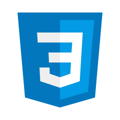
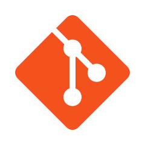
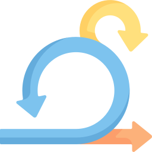
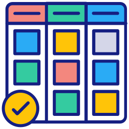

<Desenvolvedor Front-end />
Graduando em Analise e Desenvolvimento de sistemas com foco em desenvolvimento Front-end. Buscando sempre aprimorar meus conhecimentos e habilidades em desenvolvimento.
Github Linkedin Whatsapp
Graduando em Analise e Desenvolvimento de sistemas com foco em desenvolvimento Front-end. Buscando sempre aprimorar meus conhecimentos e habilidades em desenvolvimento.
Github Linkedin Whatsapp



